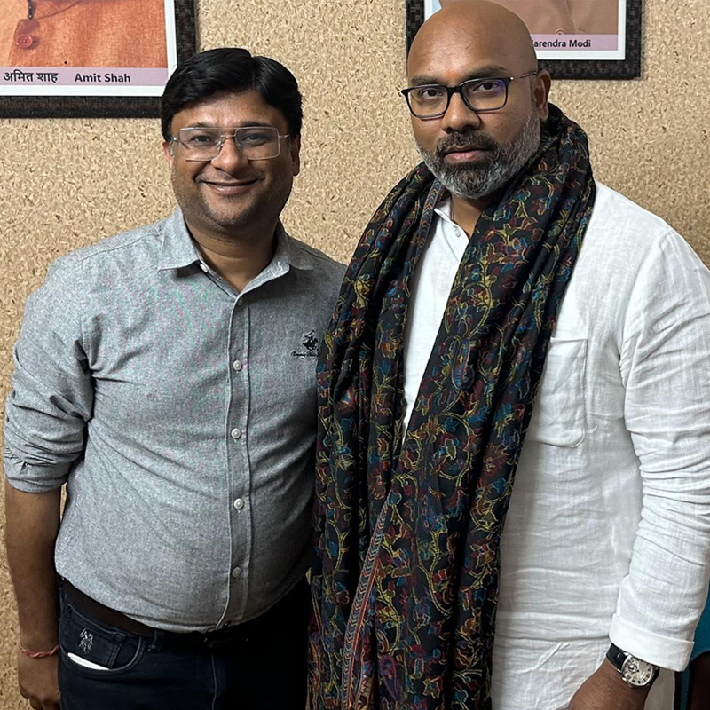
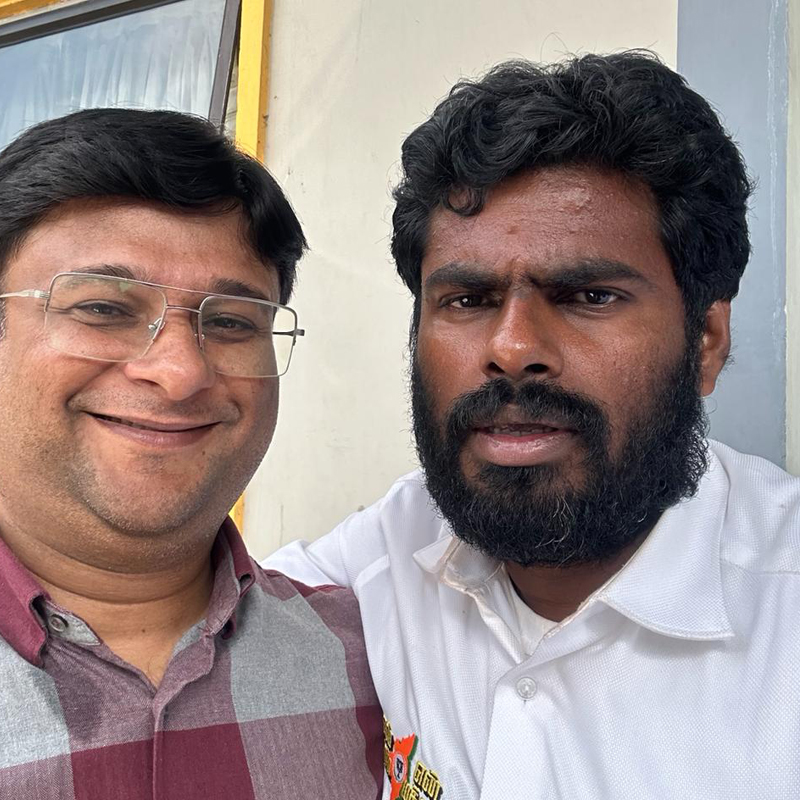

<main id=main style=opacity:1>
    <section class="breadcrumb__area include-bg breadcrumb__overlay team_banner"
    style="background-image:url(https://react-arvilax.vercel.app/assets/img/breadcrumb/breadcrumb-bg-2.jpg)">
    <div class=container-xl-xl>
        <div class=row>
            <div class=col-xxl-12>
                <div class="breadcrumb__content text-center p-relative z-index-1">
                    <h3 class=breadcrumb__title>Gallery</h3>
                
                </div>
            </div>
        </div>
    </div>
</section>

    <div class="portfolio-columns-3 portfolio-gaps">
        <article class="hentry odd status-publish page post-69 type-page" id=post-69>
            <div class=heading-row>
                <h2 class=heading-h2>Need Any<br class="d-lg-block d-none">Consultations ?</h2>
            </div>
            <div class="kktfwp-projects-wrapper">
                <div class=p-filter>
                    <ul class="flex">
                        <li data-slug=overall><a href=# class="kktfwp-filter-btn active" data-filter=.all>All</a>
                        <li data-slug=advertising><a href=# class=kktfwp-filter-btn data-filter=.portfolio-type-advertising>Advertising</a>
                        <li data-slug=branding><a href=# class=kktfwp-filter-btn data-filter=.portfolio-type-branding>Branding</a>
                        <li data-slug=digital><a href=# class=kktfwp-filter-btn data-filter=.portfolio-type-digital>Digital</a>
                        <li data-slug=web-design><a href=# class=kktfwp-filter-btn data-filter=.portfolio-type-web-design>Web design</a>
                    </ul>
                </div>
                <div class=kktfwp-projects>
                    <div class=gutter-size></div>
                    <div class=grid-size></div>
                    <div class="hentry odd status-publish all filterable-project has-post-thumbnail kktfwp_portfolio portfolio-project type-kktfwp_portfolio portfolio-type-branding portfolio-type-advertising post-7" id=7><a href=# class=has-overlay id=overlay_7>
                            <div class=img-h></div>
                        </a></div>
                    <div class="hentry odd status-publish all filterable-project has-post-thumbnail kktfwp_portfolio portfolio-project type-kktfwp_portfolio portfolio-type-branding post-495" id=495><a href=# class=has-overlay id=overlay_495>
                            <div class=img-h></div>
                        </a></div>
                    <div class="hentry odd status-publish all filterable-project has-post-thumbnail kktfwp_portfolio portfolio-project type-kktfwp_portfolio portfolio-type-branding post-9" id=9><a href=# class=has-overlay id=overlay_9>
                            <div class=img-h></div>
                        </a></div>
                    <div class="hentry odd status-publish all filterable-project has-post-thumbnail kktfwp_portfolio portfolio-project type-kktfwp_portfolio portfolio-type-branding portfolio-type-digital post-17" id=17><a href=# class=has-overlay id=overlay_17>
                            <div class=img-h></div>
                        </a></div>
                    <div class="hentry odd status-publish all filterable-project has-post-thumbnail kktfwp_portfolio portfolio-project type-kktfwp_portfolio portfolio-type-advertising portfolio-type-digital post-42" id=42><a href=# class=has-overlay id=overlay_42>
                            <div class=img-h></div>
                        </a></div>
                    <div class="hentry odd status-publish all filterable-project has-post-thumbnail kktfwp_portfolio portfolio-project type-kktfwp_portfolio portfolio-type-branding portfolio-type-web-design post-32" id=32><a href=# class=has-overlay id=overlay_32>
                            <div class=img-h></div>
                        </a></div>
                </div>
            </div>
            <div class=kktfwp-loader-wrapper>
                <div class=button-row><a href="/services" class="mil-arrow-place mil-btn-space mil-button"><span>What we do</span><svg class=mil-arrow viewBox="0 0 24 24" xmlns="http://www.w3.org/2000/svg">
                            <path d="M 14 5.3417969 C 13.744125 5.3417969 13.487969 5.4412187 13.292969 5.6367188 L 13.207031 5.7226562 C 12.816031 6.1136563 12.816031 6.7467188 13.207031 7.1367188 L 17.070312 11 L 4 11 C 3.448 11 3 11.448 3 12 C 3 12.552 3.448 13 4 13 L 17.070312 13 L 13.207031 16.863281 C 12.816031 17.254281 12.816031 17.887344 13.207031 18.277344 L 13.292969 18.363281 C 13.683969 18.754281 14.317031 18.754281 14.707031 18.363281 L 20.363281 12.707031 C 20.754281 12.316031 20.754281 11.682969 20.363281 11.292969 L 14.707031 5.6367188 C 14.511531 5.4412187 14.255875 5.3417969 14 5.3417969 z"></path>
                        </svg></a></div>
            </div>
        </article>
    </div>


  

</main>